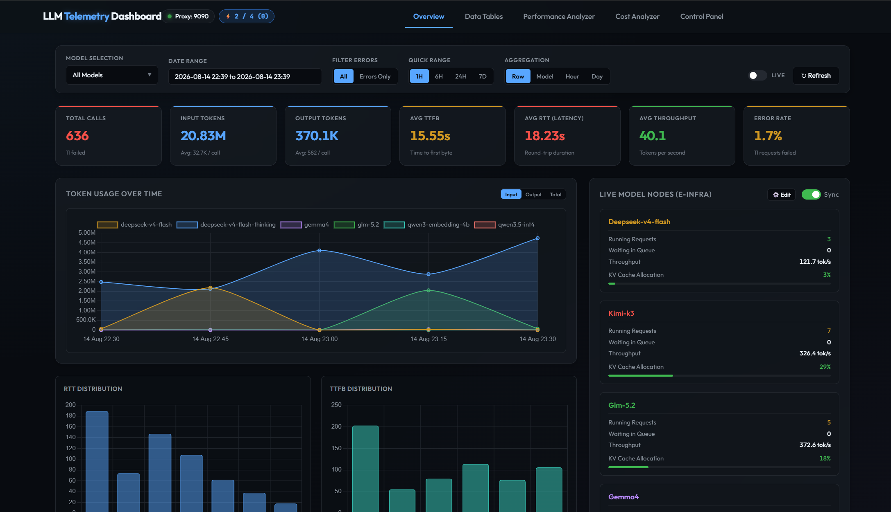

LLM Telemetry Proxy & Dashboard
Welcome to the LLM Telemetry Proxy & Observability Suite documentation.
This suite provides a lightweight, non-intrusive reverse proxy and real-time visualization platform for Large Language Model (LLM) APIs.

🎯 What Problem Does This Solve?
When building LLM-powered applications or multi-agent workflows, engineering teams encounter several key challenges:
- Blind Spots in Token Economics: Unpredictable token usage and lack of historical cost tracking across different models and price drops.
- Rate Limit 429 Cascades: In-flight concurrency exceeding upstream provider limits during peak bursts.
- Latency & Throughput Variance: Unclear breakdown between network TTFB (Time-To-First-Byte), model generation speed (tok/s), and total RTT.
- Debuggability Without Privacy Leaks: Difficulty inspecting real-time prompts, tool calls, and reasoning tokens without exposing credentials or sending sensitive logs to third-party SaaS vendors.
LLM Telemetry Proxy solves all of these out of the box with zero external infrastructure dependencies.
🌟 Core Highlights
graph TD
A[Client Request] -->|Port 9090| B[LLM Telemetry Proxy]
B -->|Concurrency Queue| C[Rate Limiter]
B -->|Budget Check| D[24H Token Supervisor]
B -->|Stream TTFB / RTT| E[Telemetry Post-Processing]
B -->|Forward| F[Upstream LLM Provider]
E -->|Write| G[(SQLite Database)]
E -->|Optional Live Stream| H[Payload Inspector UI]
G -->|Query Engine| I[Dashboard Server :9118]
I -->|Charts & Analytics| J[Web Browser]1. Transparent Reverse Proxying
- Fully compliant with OpenAI-compatible API routes (
/v1/chat/completions,/v1/embeddings,/v1/models,/v1/rerank). - Supports synchronous batch responses and Server-Sent Events (SSE) streaming.
- Passive metric capture without modifying or delaying request payloads.
2. Active Reliability & Rate Limiting
- Adaptive Concurrency Semaphore: Prevents upstream 429s by gating concurrent API calls.
- Rolling 24-Hour Token Budget: Hard quota enforcement with persistent state across process restarts.
3. Comprehensive Observability Dashboard
- Performance Distributions: Compare TTFB, Total RTT, and Generation Speed (tok/s) across models.
- Model Duel & Head-to-Head Comparison: Dynamic performance benchmarking between leading models.
- Cost Analyzer: Historical multi-tier cost modeling with automatic LiteLLM pricing synchronization.
- Live Payload Inspector: Real-time SSE streaming stream with structured prompt, reasoning, and tool call breakdown.
🧭 Navigation Guide
- Getting Started: Prerequisites, setup, unified launcher, and client configuration.
- Architecture & Design: Deep dive into the proxy pipeline, SQLite schema, and aggregation engine.
- Proxy Gateway: Proxy flags, concurrency semaphore, token budget supervisor, and raw payload logging.
- Analytics Dashboard: Dashboard features, time series charts, model duel, and cost analyzer.
- API Reference: REST endpoints and SSE streaming protocols.
- Maintenance & Operations: Database compaction, LiteLLM pricing sync, and process lifecycle control.